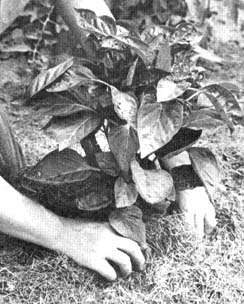
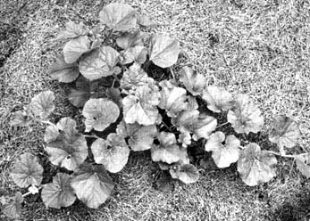
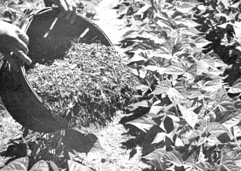

Your Garden + Natural Mulches = Better Harvests
July/August 1971
by BETTY BRINHART
When my parents migrated from the Ukrain region in Russia to the rich farm lands of Illinois during the late 1800's, they were already experienced organic mulchers...not from choice, but from extreme necessity.
Although the prevailing winds of the Ukrain could usually be depended upon to provide sufficient rainfall during the growing season, there were years when those winds completely failed the farmers and gardeners. The dry, scorching summers that followed could be just as cruel and devastating to plant life as the Sahara and crop failures and famine caused untold suffering among the inhabitants during the year that followed.
Although these simple Russians put their entire trust in God and Nature, they gradually realized that that was not enough to insure them a decent harvest every year ...and they set about devising some means of minimizing the destructive force of the droughts.
One spring, someone tried using dried meadow hay as a mulch to conserve soil moisture during the summer months. The idea worked ...and spread like wildfire. Soon everyone was cutting the lush, green grass in the meadows and along streams, drying it in the sun and storing it in neat stacks beside the family garden or orchard for use when needed.
When the vegetables were tall enough garden plots were heavily mulched with a 12-inch layer of the dried hay and more grass was thickly spread around fruit trees, berry plants and flowers. Soon, garden mulching had become a way of life, and - when one of the most severe droughts of all hit the Ukrain several years later - the mulched gardens came through with very little loss of production. Thus, my ancestors warded off a potentially-serious famine.
Having learned the hard way that good gardening and summer mulching go hand in hand, my mother gardened the same way in Illinois. Here, however, she ran into criticism from German-born neighbors who believed in 'clean' gardening. They didn't want any 'trash' (as they called my mother's mulch) in the aisles to spoil the beauty of their straight, well-cultivated vegetable rows.
Although the neighbors laughed at my mother's 'sloppy' gardening, she said nothing...but neither did she change her methods. Then, as sometimes happens in Illinois, a prolonged drought hit and not one drop of rain fell for two full months!
The German gardens withered and died but my mother's, which was heavily mulched with old hay, went on growing as usual and that fall she could often be seen strolling down the lane to one neighbor's house or another with a basket of carrots, potatoes, squash or apples. The neighbors, grateful for the fresh produce, apologized for laughing at Mother's gardening ideas and began asking questions about them. Before long, with my mother's help, almost the entire neighborhood turned into one gigantic organic garden!
WHY A GARDEN MULCH IS NECESSARY
A mulch is a layer of organic matter of variable thickness, used as a soil cover to control weeds, preserve soil moisture and improve the fertility and structure of the soil itself. If you're energetic enough to keep a natural mulch on your garden throughout the year, you will be doing just as Nature has done since the beginning of time.
Try as you may, you will not find naked soil in the wilderness. If it isn't covered with a lush carpet of ferns, wild flowers and vines, such soil is hidden beneath a thick blanket of dried leaves and decaying wood and beneath the cover is a layer of organic matter in all stages of decay. This is Nature's way of building rich top soil.
You can create such rich dirt in your own garden (without spending a cent) from unwanted plant materials and aged manures. Heavy applications of compost (made from shredded garden trash, leaves, man ure or green lawn clippings) and manures of all kinds for three years will give you almost one inch of rich new topsoil. It takes Nature 100 years to do the same.
MULCHES GOOD AND BAD
Although plastic mulches are highly advertised, we won't use them in our garden. In the first place they cost money and, second, they do not improve the fertility, or condition, of the soil in any way. Among the natural mulches that we do use are shredded corn stalks, pine needles, peat moss, spoiled hay straw, salt hay, green grass clippings, shredded newspapers and young weeds that have not yet gone to seed.
Although mulches may be purchased, I advise you to look around before spending your hard-earned cash on the store-bought variety. Most natural mulching materials can be obtained free of charge from parks and streetcleaners and grass clippings are always available from homeowners only too happy to be rid of them. Units mowing along highways will allow you to rake hay from the embankments, and the telephone and power company men who prune tree branches will usually give you all the shredded wood you want.
Check your local lumber yards for wood chips and sawdust. In the spring, farmers will sometimes let you have leftover hay or straw just for cleaning out their lofts or barn lots. (Look for unwanted cow manure here also.) Often you can find a nearby unused lot or field from which the owner will let you cut all the tall grass you need. And don't forget to check factories in your neighborhood. Many throw away plant and animal products that serve nicely as garden mulches. If you gather more than you can use immediately shred the excess with a shredder or rotary mower and make compost. You can't buy a better garden fertilizer for all the money in the world.
THE ADVANTAGES OF MULCHING
All types of gardening benefit directly or indirectly from mulching and through practice you'll learn what type of mulch and what thickness is best for every plant. Keep in mind, however, that acid-loving plants, such as Rhododendrons and all evergreens, prefer an acid mulch like peat moss or pine needles while non-acid-loving plants, such as most fruits and vegetables, prefer dried hay, grass clippings and other non-acid mulches.
There are many advantages to using mulch in your summer garden. For instance:
1. All natural mulches conserve soil moisture. With a constant supply of moisture about their roots plants grow steadily. This produces more robust growth, bumper crops of tastier fruits and vegetables and bigger flowers. A mulch can also save valuable plants during heavy droughts when there is no water available for irrigation.
2. In dry, arid regions a mulch will prevent rain and wind erosion. And when rains do fall in such an area the water is quickly absorbed by the porous earth beneath a mulch. As an added bonus, this rain carries free nitrogen which it absorbed while passing through the atmosphere and the free nitrogen becomes immediately available to plants as food.
3. A good mulch controls all annual and perennial weeds. Should a weed appear it can easily be pulled by hand from the soft earth below.
4. All soils, no matter how fertile, can stand a little improving. Organic mulches quickly decay, merge with the topsoil and enrich it with plant nutrients. As soil particles absorb the decayed organic matter, they become more crumbly in texture. This creates air spaces through which oxygen can reach the roots and improves water penetration. The aeration and penetration of water stimulates root growth and biological activity in the soil and the result's greater soil fertility.
5. A thick mulch is also an excellent controller of soil temperature. Soil bacteria, which are constantly busy releasing plant nutrients. from mulch and applied fertilizers, work best in a soil temperature of 70 to 85 degrees F. When temperatures drop below or rise above this mark, bacterial action slows down or stops completely. A good mulch will maintain the right working temperatures for soil bacteria throughout summer regardless of outside conditions which, again, means your soil will steadily increase in fertility.
6. When well-aged manures, tobacco stalks, soy bean hay or grass clippings from well-fed lawns are used as mulch, very little or no fertilizer is needed throughout the gardening season. As these different organic products decay, they slowly release all the nutrients a plant needs for good growth without burning its delicate feeder roots.
7. Mulches do wonders in protecting the shallow roots of such plants as blueberries, Azaleas and Rhododendrons. Without a mulch, these plants must be cultivated. Deep cultivation, however is detrimental to their health since even the slightest scraping of the surface to control weeds will sever a multitude of valuable feeder roots.
8. A 6-inch mulch of ground corn cobs, wood chips or sawdust placed in the garden aisles, or paths, will enable you to walk in your garden immediately after a heavy rain without compacting the moist soil or getting your shoes muddy.
Mulch placed under individual squash, melons or pumpkin plants eliminates fruit rot due to direct contact with cool, moist soil and soil insects. It will also prevent the fruit from getting splattered with mud every time it rains.
9. A natural mulch is invaluable in areas that suffer from great fluctuations in winter temperature. Properly applied after the ground freezes hard in late fall, a mulch will prevent the alternate thawing and freezing of the soil that can completely destroy root systems of even the strongest perennials.
Mulches will also prevent deep freezing around less hardy plants and will help to keep the soil from freezing in bulb beds where late plantings must be made in early winter. In such cases, mulch is removed to allow the bulbs to be planted, then it's replaced after the area freezes hard.
REMEMBER THESE FACTS WHEN MULCHING WITH NATURAL MATERIALS
A. Mice will often nest under a mulch beneath low-hanging branches. If left undisturbed they will eventually feed on bark during the winter, and cause serious damage to your trees. Either place traps beneath any mulch in the orchard or keep the mulch at least 12 inches away from the trunk of each tree.
B. Dry mulches can be a fire hazard in dry weather. Be careful about lighted matches and discarded cigarette butts if you smoke while working in the garden.
C. Natural mulches, such as sawdust, green grass clippings and fresh hay, cause a nitrogen deficiency in the soil for a short period after application. During this time, plant growth suffers. Although the condition is never very serious, it can be prevented entirely by scattering a natural fertilizer high in nitrogen (animal manure, bloodmeal, bone meal, tankage or sewer sludge) over the surface before putting down the mulch.
OTHER USES FOR NATURAL MULCH
By practicing these additional uses of mulch in your garden you can add to your gardening enjoyment and success.
I. Apply a thin, finely-chopped mulch over a seeded row (such as carrots) so that weeds will not choke out the young seedlings before they get started. Remove as soon as green shows beneath the mulch.
II. Allow a mulch to remain on light, sandy soil all year and plant under it. But the mulch must be removed in early spring from heavy soil so that such earth may dry off quickly for early planting.
III. Do not mulch transplants, such as tomatoes or peppers, until they are well started.
IV. Never mulch tall annuals as it causes them to set shallow root systems which are inadequate for plant support during heavy rains or strong winds.
V. Heavily mulch all plants that prefer cool soil temperatures throughout summer, but mulch only the aisles of those that like warmth.
SUMMARY
There is no easier nor cheaper way to improve your soil's texture and fertility than by using natural mulches in your vegetable and flower garden. Using a mulch is like having someone do your gardening for you free of charge. There's no water to haul, no weeds to pull and no fertilizer to spread. And, should you want to take an extended summer vacation, you need not worry about coming back to a garden choked with weeds. When you mulch, your harvests will be far greater and your fruits and vegetables will have a better flavor and higher nutritional value.
So do yourself a favor this and every summer by letting natural mulches do your gardening for you.
|
 Pepper plants do extremely well and set a good crop under a thick mulch of straw or dried hay. |
 Although melons like a warm soil, all but the hills should be mulched with any dry, natural material at hand. Straw, hay or dry grass clippings will conserve soil moisture and keep weeds from crowding vines. |
 Snap beans double their yield if aisles between rows are heavily mulched when plants are 12 inches tall. Green grass clippings are excellent here. No need to dry the clippings if they're not applied too thickly. |
 If your soil has a a tendency to pack hard in summer, there is no better natural medicine than wood chips to keep that dirt loose and porous. Use the chips like any other mulch, especially on garden paths and in heavily traveled areas. Best of all, like many mulches, wood chips are free for the hauling in most regions. |
|
|